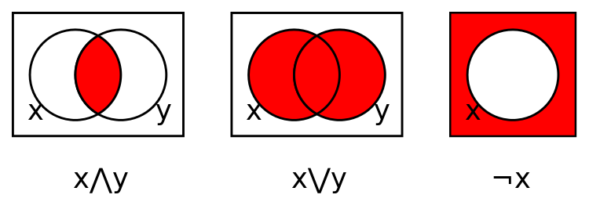
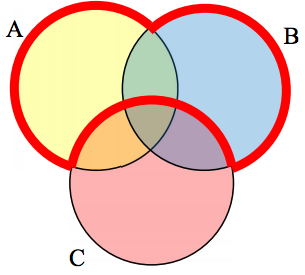

Russell's paradox: consider "the set of all sets that are not
members of themselves", which leads to a contradiction since it
must be a member of itself and not a member of itself.
Set Theory
Definitions
-
A set is a collection of distinct, unordered
elements.
-
{ a, b, a, c } is not a set because it contains
duplicates.
-
{ a, b, c } is the same as
{ c, b, a } because order doesn't matter.
Notation
-
Sets are usually denoted with capital letters.
-
A set that contains no elements is called the
empty set or the null set.
Subsets and Supersets
-
A set A is a subset of a set B if every element of A is
also an element of B.
A = { a, b, c }B = { a, b, c, d, e }- Therefore A is a subset of B.
-
A set B is a superset of a set A if every element of A
is also an element of B.
- This is the inverse of a subset relationship.
Subset / superset example:
- Dog is subset of...
- Canine is subset of...
- Mammal is subset of...
- Animal
Likewise:
- Animal is superset of...
- Mammal is superset of...
- Canine is superset of...
- Dog
Proper Subsets
-
Oddly enough, equality is considered a subset relationship.
A = { a, b, c }B = { a, b, c }- Therefore A is a subset of B.
-
A set A is a proper subset of a set B if every element
of A is also an element of B, but A and B are not equal.
A = { a, b, c }B = { a, b, c, d, e }- Therefore A is a proper subset of B.
Venn Diagrams
Logical relationships between sets can be represented visually using Venn
diagrams.

Intersection
-
The intersection of two sets is the set of elements
that are in both sets.
- Symbol:
∩
-
Logical AND
A = { a, b, c }B = { a, b, c, d, e }A ∩ B = { a, b, c }
Demo:
Venn...
Union
-
The union of two sets is the set of elements that are
in either set.
- Symbol:
∪
-
Logical OR
A = { a, b, c }B = { a, b, c, d, e }A ∪ B = { a, b, c, d, e }
Demo:
Venn...
Complement
-
The complement of a set is the set of elements that are
not in the set within the context of a universal set.
- Symbol:
'
-
Logical NOT
- Given a universal set
U = { a, b, c, d, e }
A = { a, b, c }A' = { d, e }
Demo:
Venn...
Quizzes and Walkthroughs
Demo:
Translating from Venn to set notation, and vice versa.
Quiz 1
Solve:
- A = { dog, oak, cherry, red, cow }
- B = { oak, dog, cow, elm, maple, goose }
- C = { door, silk }
- Find: C ∩ A ∪ B
-
{ door, silk } ∩ { dog, oak, cherry, red, cow } ) ∪ { oak, dog, cow,
elm, maple, goose }
- { } ∪ { oak, dog, cow, elm, maple, goose }
- { oak, dog, cow, elm, maple, goose }
Let's Venn this - does it line up?
Quiz 2

Create an expression that represents the area outlined in red.
(A ∨ B) ∧ ¬C
or with set notation:
(A ∪ B) ∩ C'
Let's set notation this - does it line up?